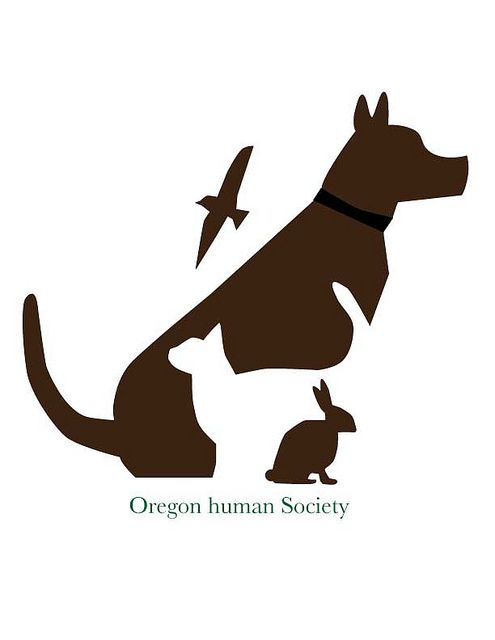

<div style="text-align:center;">

<div style="text-align:center; margin-top:40px;">
<a style="padding-right: 20px;" href="home.html">back</a>

<h1 style="font-size:50px; text-align:center;"> fellings</h1>
<p style="size:20px; text-align:center; line-height: 30px;">A list of animal-related essay topics
We’ve compiled a list of 30 ideas to assist you in coming up with a topic for your essay. These themes have a lot of potential, but you should choose one based on your intuition and interests.

Animal testing for medical purposes is unethical and morally wrong.

Zoos are harmful to non-endangered living things.

Why is it inhumane to confine living creatures in cages?

Why zoo ecosystems are harmful and how they work

Service dogs are a novel approach to connecting humans and living beings.

Animal companions are really beneficial to lonely people.

Is keeping pets at home moral?

Why should bee protection be our top priority?

Why is it necessary to make animal cruelty a crime?

Humans are responsible for the extinction of various species all over the planet.

Without humans, domestic animals would not exist.

Wiped Out Species due to human activities

Animal species that might not exist today if humans were not exist

Is it acceptable to treat cats and dogs as superior beings?

Do other living things have the same thoughts as humans do?

Which mammals are the most intelligent on the planet?

It is natural for animals to devour other animals in order to survive.

How hunting may be enjoyable

Things to think about before having a pet

Animal mistreatment should be something we all feel required to report.

Most people consider having a pet to be fashionable.

Caring for living things has become fashionable, yet few people truly care.

What makes veterinarian care so costly?

Why is it preferable to adopt a dog rather than purchase one?

Being a pet owner in the twenty-first century entails a lot of responsibilities.

Should humans have power over the ecosystems of other creatures?

Cats are not as good as dogs as pets!

Zoos can be beneficial to animals as well!

What distinguishes pet birds from other creatures?

The bright side of Vegan cuisine</p>

<div style="text-align:center;"><a style="padding-right: 20px;"  href="https://www.google.com/">google</a>


<hr style="width: 60%;">

<h1 style="font-size:50px; text-align:center;"> our </h1>


<h1 style="font-size:20px; text-align:center;"> night view </h1>


<h1 style="font-size:20px; text-align:center;"> fel Nature</h1>


<h1 style="font-size:50px; text-align:center;"> Preserve Nature</h1>

<p style="size:30px; text-align:right; line-height: 30px;">

by Manisha rajput

 </p>

<a style="padding-right: 20px;" href="home.html">back</a>

<p style="size:20px; text-align:center; line-height: 30px;">Until one has loved an animal, a part of one’s soul remains unawakened  
Love of animals and animal friendship is a feeling of affection that humans often have towards non human beings, such as animals. Humans share special bonds of loyalty and love with their animals and pets. It is a pleasurable relationship between humans and animals that brings these two diverse species together.</p>


<!DOCTYPE html>
<html>
<head>
  <style>
    body {
      background-color: #FFFFCC; /* nature */
    }
  </style>
</head>
<body>
  <h1>Hello,</h1>
  <p>Hills</p>
</body>
</html>


